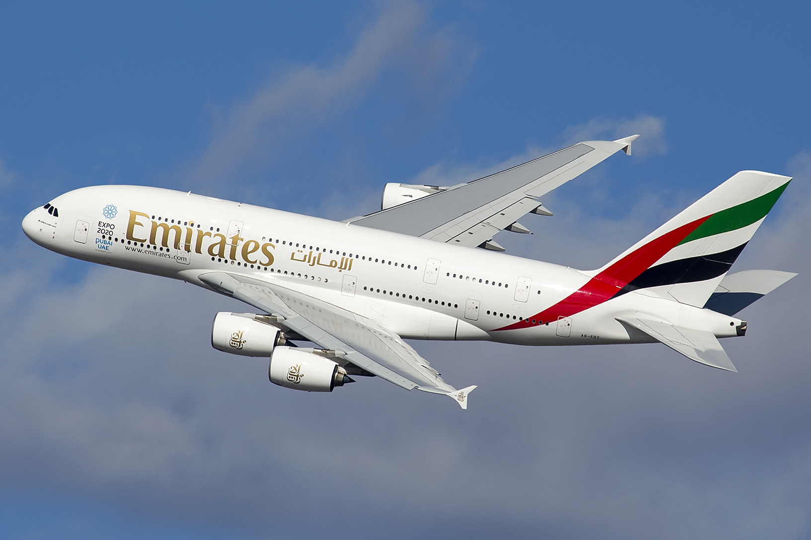
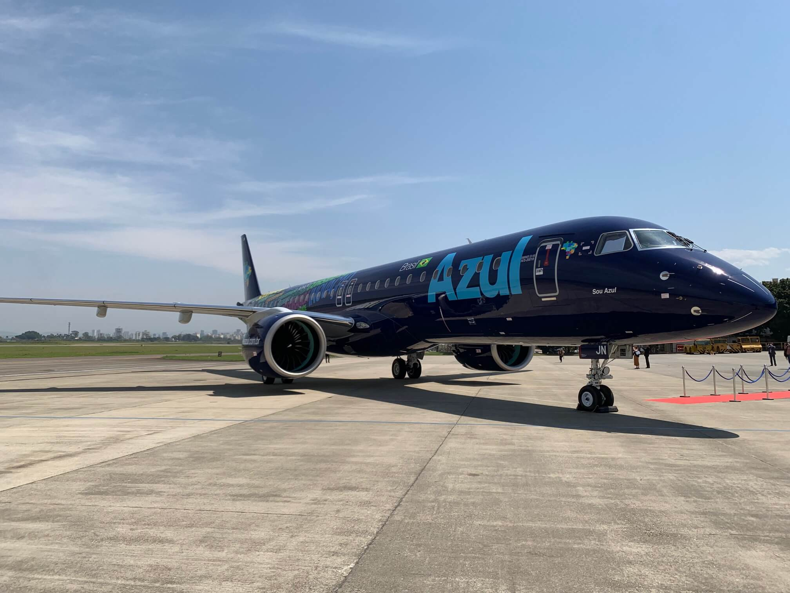
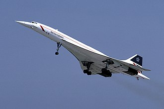

AeroWill
| Imagem | Modelo | Fabricante | Descrição Resumida |
|---|---|---|---|
|
 |
Airbus A380 – O Superjumbo | Airbus | Maior avião de passageiros do mundo, com dois andares e capacidade para até 853 passageiros. Primeiro voo comercial em 2007, símbolo de luxo e inovação. |
_(cropped).jpg)
|
Boeing 787 Dreamliner | Boeing | Revolucionário pelo uso intensivo de materiais compostos, janelas maiores e sistema de pressurização que reduz o cansaço em voos longos. |
|
 |
Embraer E195-E2 | Embraer | Maior jato da família E-Jets, fabricante brasileira. Destaca-se pela economia de combustível, baixo ruído e ideal para rotas regionais. |
|
 |
Concorde – O Ícone Supersônico | Aérospatiale / BAC | Aposentado em 2003, cruzava o Atlântico em menos de 3 horas a Mach 2,04. Inspira projetos supersônicos do futuro. |